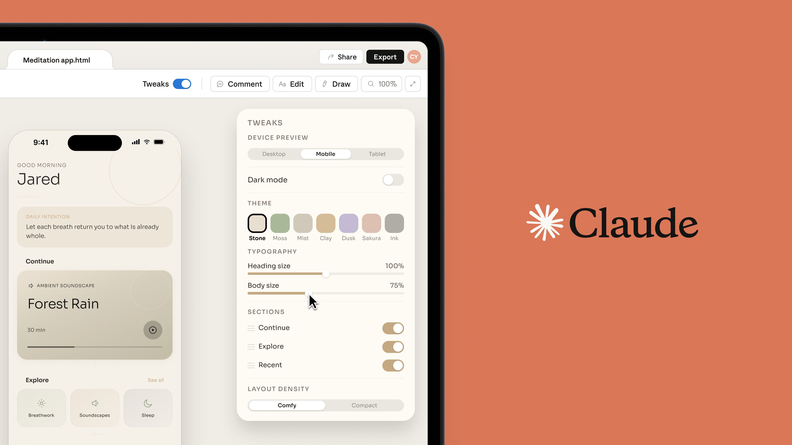
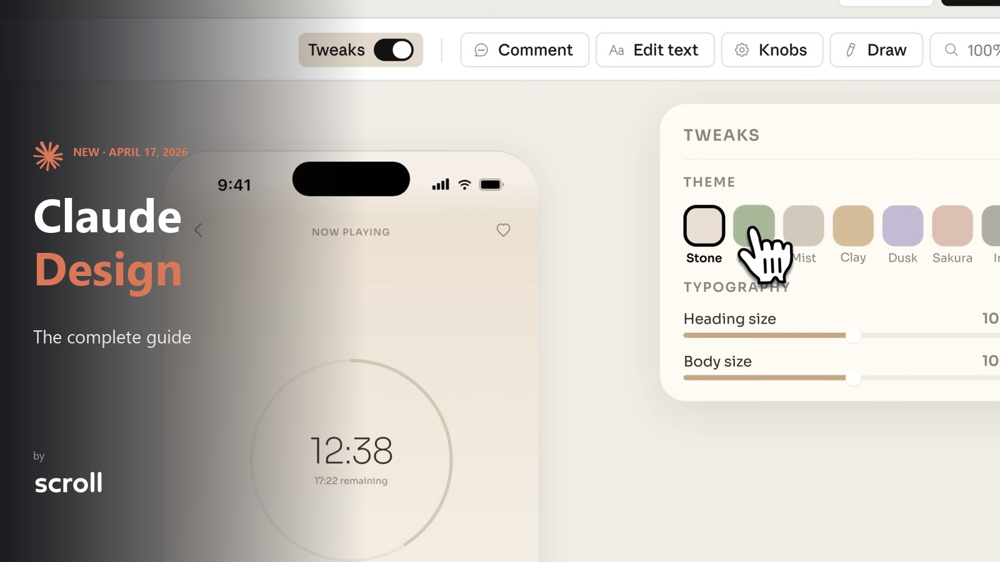

📸 Protótipos mobile reais com ios_frame + Tweaks
Dois exemplos de apps de meditação iOS gerados com ios_frame.jsx + Tweaks customizados controlando paleta, tipografia e densidade.


📌 Note: ambos protótipos usam ios_frame.jsx (notch + status bar + home indicator visíveis). Realismo +80% percebido pelo stakeholder vs mockup sem moldura.
App genérico iOS
Splash, 3 carousel telas, permission, welcome. Transições CSS suaves entre telas, botão "skip" visível.
ios_frame · CSS transitions · Skip button · Progress dots
Apple Pay-first
Cart summary, shipping, payment (Apple Pay destaque + card), review, success com animação.
Apple Pay hero · Review · Success animation
Dense mobile data
Balance card hero, quick actions horizontais, transactions list, spending chart inline, insights AI.
Balance · Quick actions · Chart inline · AI insights
First-use, list-empty, error
Cada com ilustração custom SVG + CTA claro. Evita "sem resultados" genérico.
SVG ilustração · CTA claro · Tom acolhedor
Feed + Post + Profile
Feed infinito, botão like com animação, compose post, profile com stats. Micro-interações subtle.
Feed · Compose · Profile · Micro-interações
iFood-style completo
Home (restaurantes), busca, cardápio, carrinho, tracking do entregador em mapa.
Restaurantes · Cardápio · Tracking + mapa · Apple Pay
App bancário formal
Login biométrico, saldo, pagamento de boleto, transferência Pix, extrato com filtro.
Biometria · Boleto · Pix · Extrato
Profile · Privacy · Notifications
Tabs profundas (2 níveis), toggles animados, confirmações modais, busca em settings.
Tabs profundas · Toggles · Modal confirmação · Busca